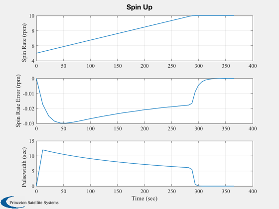

Demonstrate the automatic spin up for ComStar.
Since version 2.
------------------------------------------------------------------------
See also SpinREst, ComStar, Constant, Plot2D, TimeGUI, Accel
------------------------------------------------------------------------
Contents
Global for the time GUI
global simulationAction
simulationAction = ' ';
rPM2RPS = Constant('RPM to Rad/Sec');
rPS2RPM = Constant('Rad/Sec to RPM');
CEPStD = ComStar('SSA CEP StD');
Spin up from 5 to 10 rpm
omega = 5*rPM2RPS;
omegaF = 10*rPM2RPS;
Use the nominal acceleration-should take 261 seconds
accelNom = 0.002;
The Kalman Filter is interrupt driven from the sun sensor pulse
nSim = 50;
Size the arrays
pwPlot = zeros(1,nSim);
xPlot = zeros(1,nSim);
tPlot = zeros(1,nSim);
pwMaxPlot = zeros(1,nSim);
omegaPlot = zeros(1,nSim);
Initialize the Kalman Filter
x = omega;
K = 0.5;
Assume the accleration is known accurately
accel = 0.9*accelNom;
time = 0;
pulsewidth = 0;
pulsewidthMax = 0;
Initialize the time display
T = 2*pi/omega;
tToGoMem.lastJD = 0;
tToGoMem.lastStepsDone = 0;
tToGoMem.kAve = 0;
[ ratioRealTime, tToGoMem ] = TimeGUI( nSim, 0, tToGoMem, 0, T, 'ComStar Spin Up' );
Simulate
for k = 1:nSim
[ ratioRealTime, tToGoMem ] = TimeGUI( nSim, k, tToGoMem, ratioRealTime, T );
xPlot(k) = x;
tPlot(k) = time;
pwPlot(k) = pulsewidth;
omegaPlot(k) = omega;
pulsewidthMax = 2*pi/omega;
pulsewidth = min(pulsewidthMax,(omegaF-omega)/accelNom);
omega = omega + accel*pulsewidth;
T = (2*pi + 0.5*accel*pulsewidth^2)/omega + CEPStD*randn;
x = SpinREst(accelNom, K, x, T, pulsewidth);
time = time + T;
switch simulationAction
case 'pause'
pause
simulationAction = ' ';
case 'stop'
return;
case 'plot'
break;
end
end
TimeGUI( 'close' )
j = 1:k;
Plot2D(tPlot(j),[omegaPlot(j)*rPS2RPM;(omegaPlot(j)-xPlot(j))*rPS2RPM;pwPlot(j)],'Time (sec)',...
{'Spin Rate (rpm)' 'Spin Rate Error (rpm)' 'Pulsewidth (sec)'}, 'Spin Up');
